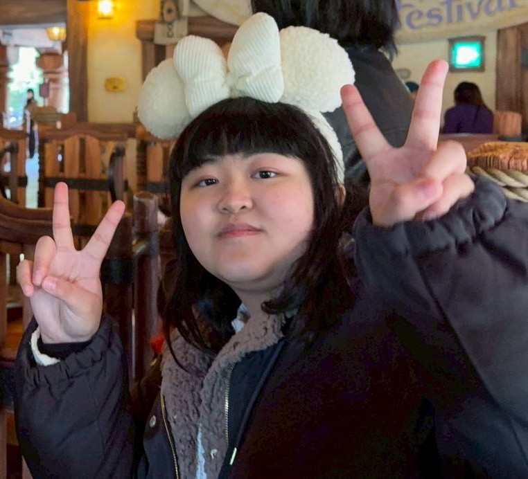

About Me / 自己紹介
渡邊 佳菜美（大学2年生）
はじめまして！このサイトを見に来て下さってありがとうございます✨
明治大学理工学部機械工学科2年の渡邊と申します！
未知の知識を学びながら形にする楽しさを知りました💡
現在はPythonやC言語の基礎を土台に、ハッカソンなどの実践環境でフレームワーク等の新しい技術へ意欲的に挑戦しています✊🔥
趣味や好きなこと
仲間と曲を演奏することが大好きで、吹奏楽を9年間続けています！
現在は明治大学応援団吹奏楽部に所属し、六大学野球をはじめとした熱い
応援活動に励みながら、音楽を楽しんでいます🥁
仲間と曲を演奏することが大好きで、吹奏楽を9年間続けています！
現在は明治大学応援団吹奏楽部に所属し、六大学野球をはじめとした熱い
応援活動に励みながら、音楽を楽しんでいます🥁

Skills / 技術スタック
プログラミング言語
Python C# C言語フレームワーク
.NET MAUI Power Apps Power Automate FastAPI環境やツール / その他
Visual Studio 2022 Visual Studio Code Git GitHub Firebase SQLite SQLModelProjects / 開発実績
① まちあいさがし ハッカソン優秀賞・企業賞
概要: 料理の待ち時間を楽しみに変える、店舗専用の間違い探し自動生成Webアプリ。サイゼリヤの間違い探しをモチーフに、プレイ後に店舗のおすすめメニューを自然に訴求する仕組みを作りました。
開発の動機: ハッカソンで「QRコード×店舗」のテーマに対し、誰もが笑顔になれる体験を作りたいと考え、生成AIを掛け合わせてオリジナルの間違い探しをノーコードで自動生成できる仕組みを発案しました。
💡 搭載機能とこだわり
- ノーコード導入: 店舗情報を入力するだけで、AIが画像を自動生成し専用QRコードを即座に発行。
- 快適な操作性: インストール不要のブラウザ駆動。2枚の画像が連動してスクロール・ズームする高度なUIを実装。
- 価値ある導線: 間違い探しの題材をメニューにすることで、楽しんでもらいながら魅力を刷り込む設計。
🛠️ 課題と解決プロセス
- 体験を重視した設計変更: 当初は「完全リアルタイム生成」を目指すも、生成に数十秒のラグが発生。お客さんを待たせるのは不適切だと判断し、事前に一括生成・登録しておく「事前配信方式」へ方針転換。イラストと相性の良い「Flood fill領域分割＋GPT-4o Vision」を組み合わせ、短期間で品質の安定と即時表示を両立しました。
- バックエンドの工夫: 2日間という限られた時間の中で、FastAPIの自動ドキュメント生成（Swagger UI）をフル活用してフロントとの齟齬を排除。非同期処理化により、応答性の高い強固なAPIを設計しました。
🚀 今後改善したい点
- AIモデルの進化に合わせ、当初構想していた「アクセスするたびに完全ランダムで画像が生成される、無限リアルタイム間違い探し」の完全実装にリベンジしたいです。
| レイヤー | 技術 |
|---|---|
| フロントエンド | React + TypeScript + Vite |
| バックエンド | FastAPI + SQLModel + SQLite |
| 画像処理・AI | OpenAI API + Flood fill + GPT-4o Vision |
② Minami High School App
概要: 自校の文化祭で各クラスの待ち時間をリアルタイムに可視化し、企画検索や公演前のリマインド通知を受け取れるネイティブアプリ。パンフレットをデジタル化し来場者の利便性を大幅に向上させました。
開発の動機: 友人や来場者からの「時間が分からず行きたかった公演を逃した」「紙のパンフレットを置き忘れた」という課題をスマホ一台で一挙に解決したいと考え、開発しました。
💡 搭載機能とこだわり
- リアルタイム表示: Firebaseを用いてクラス代表者が送信した待ち時間を即座に全体へ同期。
- スマートリマインド: 公演5分前に通知を送信。開始時刻を過ぎた公演は登録できないバリデーションを実装。
🛠️ 課題と解決プロセス
- データ連動の不具合解決: 初期はFirebaseのリアルタイム接続が不安定だったため、技術記事の調査や大学の教授へアドバイスを仰ぎ原因を特定。泥臭く修正とテストを繰り返しデータ連動を成功させました。
- 配信制約の突破: 期間中のアプデが困難な環境だったため、コード内に日付判定ロジックを実装。1日目と2日目で自動でコンテンツが切り替わるよう事前に設計しました。
- 自由度の追求: 当初検討したPowerAppsから、一般客の利便性と自由度を考慮して「.NET MAUI (C#)」へ自らシフトしました。
🚀 今後改善したい点
- ネイティブアプリのビルドや配布コストの大きさを学んだため、次回はURLを叩くだけで誰でも一瞬でアクセスできる「Webアプリ（SPA）」での構築に挑戦したいです。
🎥 アプリ動作デモ：待ち時間の送信と表示、検索、リマインド機能について
③ ～自習室の利用状況～ Checkアプリ
概要: 外から空き具合が分からない構造だった学校の自習室の課題を解決するシステム。スマホ上で空席状況をリアルタイム確認できるようにし、学生の無駄足をなくして全体の利用率を向上させました。
開発の動機: 実際に中に入るまで空席が分からず、「混んでそうだから帰る」という学生のミスマッチが頻発していたため、時間を有効活用してほしいと思い開発を決意しました。
💡 搭載機能とこだわり
- 空席ジャッジ & ログ管理: Microsoft Formsの送信状況から現在の空き席数を自動集計。先生方が「利用時間帯を把握したい」という管理上の要望も同時にクリアしました。
- サステナブル設計: 引き継ぐ後輩がメンテナンス時に迷わないよう、極力シンプルな構造を維持しました。
🛠️ 課題と解決プロセス
- 自動化フローの試行錯誤: Forms・Excel・PowerAppsを裏で繋ぐPower Automateの設計において初期はエラーが多発。公式ドキュメントで仕様を徹底調査し仮説検証を高速で回した結果、安定した連携フローを確立しました。
- 迅速な課題解決: 学校インフラ内でスピード実装と安定運用を両立するため、Power Platformをフル活用しました。
🚀 今後改善したい点
- 蓄積された利用ログデータを解析し、「曜日や時間帯ごとの傾向から見た混雑予測機能」を実装して、さらにユーザー体験（UX）を高めたいです。
🎥 システム動作デモ：アプリ全体、Forms入力から空席状況が切り替わる様子
④ Project #4 （新しく「期限守るくん」というスケジュールアプリをGitHubとVS Codeを用いて開発中！）